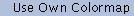
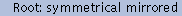

|
This menu controls how the image is displayed on your
screen. None of these commands actually modify the
image itself, only how it is presented. |

- Returns the displayed image to its 'raw' state (where
each pixel in the displayed image is as close as possible
to the corresponding pixel in the internal image). In
short, it turns off any dithering or smoothing. This
command is normally disabled, and is only enabled after
you have issued a Dithered or Smooth
command.
-

- Regenerates the displayed image by dithering with the
available colors in an attempt to approximate the
original image. This has a useful effect only if
the color allocation code failed to get all the colors it
wanted. If it did get all the desired colors, the Dither
command will just generate the same display image as the Raw
command. On the other hand, if you didn't get all the
desired colors, the Dither command will try to
approximate the missing colors by dithering with the
colors that were obtained, which can help
eliminate visible banding, and such. Note: If you are
running xv on a 1-bit display the Dither
command will be disabled, as the image will always be
dithered for display.
-

- Smoothes out distortion caused by integer round-off when
an image is expanded or shrunk. This is generally a
desirable effect, however it can be fairly time-consuming
on large images, so by default it is not done
automatically. See "Modifying
xv Behavior" for more details. Note that Smooth
only has a useful effect if the image has been
resized. If the image is being displayed at its normal
1:1 expansion ratio, then the Smooth command will
not have a useful effect.
Note: if you are currently
in '24-bit mode' (see "The 24/8 Bit Menu"
for more info), the Dithered command is disabled, Raw
displays the image (dithered on an 8-bit display), and Smooth
displays a smoothed version of the image (dithered on an
8-bit display).

- When turned on, forces xv to use read/write color
cells (ignored and disabled in Use Std. Colormap
mode, below).. Normally, xv allocates read-only
color cells, which allows it to share colors with other
programs. If you use read/write color cells, no other
program can use the colormap entries that xv is
using, and vice-versa. The major advantage is that using
read/write color cells allows the Apply function
in the xv color editor window to operate much
faster, and allows the Auto-Apply while dragging
feature to be used at all. Also note that this command is
only enabled if you are running xv on a PseudoColor
display. See "Color
Allocation in xv" for more
information on display modes.
-

- xv's normal color allocation mode. For any given
picture, xv figures out what colors should be
allocated, and tries to allocate them (read-only, or
read/write, as determined by the Read/Write Colors
setting). If any color allocation fails, xv will
try a few other tricks, and generally just map the
remaining colors (the ones it didn't get) into the closest
colors that it did get.
-
- When Perfect Colors is turned on, xv
proceeds as in the Normal Colors case. If any
color allocation request fails, all colors are freed, and
xv creates itself a private colormap, and tries
all over again. It is assumed that having a private
colormap will provide more colors than allocating out of
the already partially-used system default colormap.
-
- 
- Like Perfect Colors , but it doesn't even try
to allocate out of the system colormap. Instead, it
starts off by creating its own colormap, and allocating
from there. Slightly faster than Perfect Colors
mode. Also useful, as certain X servers (AIX 3.1 running
on an RS6000, for instance) never report an
allocation error for read-only color cells. They just
return the closest color found in the system colormap.
Generally nice behavior, but it prevents Perfect
Colors mode from ever allocating a colormap...
-
- An entirely different color allocation mode. Instead of
picking the (generally unique) colors that each image
requires, this mode forces all images to be displayed
(dithered) using the same set of (standard) colors. The
downside is that the images don't look as nice as they do
in the other modes. The upside is that you can display
many images simultaneously (by running more than one copy
of xv) without instantly running out of colors.
The setting of Read/Write Colors is ignored while
in this mode. Also, this mode is the only one available
when you are displaying images in 24-bit mode.
 |
While xv normally displays an
image in its own window, it is also possible for it to
display images on the root window (a.k.a. 'the
desktop'). You would normally use this feature from the
command- line, as part of some sort of X startup script,
to put up a background pattern or image of your choice.
See "Root
Window Options" for further information on the
relevant command-line options. You can also specify
root display options interactively, while the program is
running, by using the Root menu, as shown.
|
One note regarding root display: it is not possible for xv
to receive button presses or keyboard presses in the root window.
As such, there are several functions that cannot be used while in
a 'root' mode, such as pixel tracking, image editing, pan and
zoom operations, etc. If you want to do such things, you'll have
to temporarily return to 'window' mode, and return to 'root' mode
when you're finished. Also, when you are in a 'root' mode, you
will not be able to get rid of the xv controls
window. At best you can iconify it (using your window manager).
There's a good reason for this. If you could get rid of
the window, there would be no way to ever get it back (since it
won't see keypresses or mouse clicks in the root window).
One other note: If you are running xv on certain 24-bit
displays, where the 'default' visual type is an 8-bit
PseudoColor, but xv in its cleverness has decided to use a
24-bit TrueColor mode, you will not be able to switch the
display to a root mode. This is because xv requires the
visual used in the 'window' mode to be the same as the visual
used for the 'root' modes. In the case of these types of
displays, it is not possible to put a 24-bit TrueColor image on
the root window. You can get this to work by using the ' -visual
default ' command-line option, which will force xv to
use the 'default' visual for both the 'window' and 'root' modes.
Also note: This is only necessary to get this menu to work on
such displays. If you use the '-root' or '-rmode'
command-line options, xv will automatically use patented
"DoTheRightThing" technology...
- Displays the image in a window. If you were previously in
a 'root' mode, the root window will also be cleared.
-

- The image is displayed in the root window. One image is
displayed aligned with the top-left corner of the screen.
The image is then duplicated towards the bottom and right
edges of the screen, as many times as necessary to fill
the screen.
-
- Similar to Root: Tiled, except that the image is
first shrunk so that its width and height are integer
divisors of the screen's width and height. This keeps the
images along the bottom and right edges of the screen
from being 'chopped-off'.
Note: using any of the
'resizing' commands (such as Normal, Double
Size, etc.) will lose the 'integer'-ness of the
image, and you'll have to re-select this mode to
'integer-ify' the image again.

- Tiles the original image with versions that have been
horizontally flipped, vertically flipped, and both
horizontally and vertically flipped. This gets rid of the
sharp dividing lines where tiled images meet. The effect
is quite interesting.
-
- Like Root: Mirrored, but also does the
integer-ization described under the Root: Integer
Tiled entry.
-
- Like Root: Tiled, but it positions the images so
that one of them is centered on the screen, and the rest
are tiled off in all directions. Visually pleasing
without the image size distortion associated with Root:
Integer Tiled .
-
- Displays a single image centered in the root window,
surrounded by black, or your choice of any other solid
color. (See "Modifying
xv Behavior " for more information.)
-

- Displays a single image centered in the root window,
surrounded by a black and white 'warp' pattern, which
produces some mildly visually pleasing Moir effects. The
colors can also be chosen by the user. (See "Modifying
xv Behavior" for details.)
-
- Displays a single image centered in the root window,
surrounded by a black and white 'brick' pattern. Again,
the colors can be set by the user.
-
- Tiles images on the root window such that the images are
symmetric around the horizontal and vertical center lines
of the screen.
-
- 
- Like the Root: symmetrical tiled mode, but the
images are also mirrored.
Note: The three 'centered' modes (Root: Centered , Root:
Centered, Warp, and Root: Centered, Brick, but not Root:
Center Tiled) require the creation of a Pixmap the size of
the screen. This can be a fairly large request for resources, and
will fail on a color X terminal with insufficient memory. They
can also require the transmission of considerably more data than
the other 'root' modes. If you're on a brain-damaged X terminal
hanging off a slow network, you should probably go somewhere
else. Barring that, you should certainly avoid the 'centered'
modes.
Also note: If you quit xv while displaying an image on
the root window, the image will remain in the root window, and
the colors used by the image will remain allocated. This is
generally regarded as correct behavior. If you decide you want to
get rid of the root image to free up resources, or simply because
you're sick of seeing it, the quickest route is to run 'xv
-clear', which will clear the root window, release any
allocated colors, and exit. Alternately, xsetroot or any
other X program that puts things in the root window should be
able to do the trick as well.